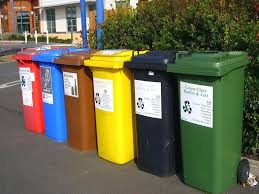

🌱 Conservación del Medio Ambiente
Impulsando el desarrollo sostenible para el futuro del planeta
🌠¿Por qué conservar el medio ambiente?
El medio ambiente es el sustento de toda vida. Conservarlo significa garantizar el bienestar de las generaciones presentes y futuras. El desarrollo sostenible busca un equilibrio entre progreso y naturaleza.
Dato cientÃfico: Según la ONU, el 75% de los servicios ecosistémicos esenciales para la vida dependen de la biodiversidad y los ecosistemas saludables.
📜 Historia del Cuidado del Medio Ambiente
El interés por el medio ambiente creció durante el siglo XX, cuando los efectos de la industrialización comenzaron a notarse. En 1972, la ONU celebró la primera Conferencia sobre el Medio Humano en Estocolmo, dando origen al DÃa Mundial del Medio Ambiente. Desde entonces, se han firmado tratados clave como el Protocolo de Kioto y el Acuerdo de ParÃs.
Dato cientÃfico: El Protocolo de Kioto, firmado en 1997, fue el primer acuerdo internacional que estableció metas obligatorias para la reducción de gases de efecto invernadero.
♻️ Contaminación del Aire, Agua y Suelo
La contaminación daña la salud humana y el entorno natural. Las emisiones de fábricas, el mal manejo de residuos y el uso de pesticidas contaminan los ecosistemas vitales.
Dato cientÃfico: Según la OMS, más de 7 millones de personas mueren cada año debido a la contaminación del aire, siendo la principal causa enfermedades respiratorias y cardiovasculares.
🦜 Pérdida de Biodiversidad
La pérdida de especies afecta el equilibrio ecológico. La deforestación, la caza ilegal y la contaminación son responsables de esta crisis que amenaza la vida en la Tierra.
Dato cientÃfico: La Unión Internacional para la Conservación de la Naturaleza (UICN) reporta que más del 28% de las especies evaluadas están en peligro de extinción.
🌡️ Cambio Climático

El cambio climático genera sequÃas, incendios, huracanes y otros desastres. Reducir las emisiones de COâ‚‚ es fundamental para frenar el calentamiento global.
Dato cientÃfico: El Panel Intergubernamental sobre Cambio Climático (IPCC) advierte que la temperatura global ha aumentado aproximadamente 1.1°C desde la era preindustrial, provocando eventos climáticos extremos.
🔋 EnergÃas Renovables
Las energÃas limpias como la solar y eólica son fuentes sostenibles que no dañan el planeta. Son claves en la lucha contra el cambio climático.
Dato cientÃfico: La Agencia Internacional de EnergÃas Renovables indica que el uso de energÃas renovables puede reducir hasta un 70% las emisiones de gases de efecto invernadero en el sector energético para 2050.
🗑️ Reciclaje y EconomÃa Circular
Reutilizar, reciclar y reducir son hábitos esenciales. La economÃa circular busca eliminar el concepto de basura y transformar residuos en recursos.
Dato cientÃfico: Se estima que la economÃa circular puede generar un ahorro global de 4.5 billones de dólares y reducir hasta un 39% las emisiones de COâ‚‚ para 2030.
📚 Educación Ambiental
Desde la infancia, la educación ambiental nos forma para respetar la naturaleza. Es la base para un cambio cultural sostenible.
Dato cientÃfico: Estudios muestran que los programas de educación ambiental aumentan la conciencia ecológica y fomentan comportamientos sostenibles en un 60% de los participantes.
🌠PolÃticas Internacionales
Los gobiernos tienen un papel clave. Acuerdos como el de ParÃs buscan comprometer a los paÃses en la lucha ambiental mediante leyes y financiamiento verde.
Dato cientÃfico: Más de 190 paÃses firmaron el Acuerdo de ParÃs en 2015, con el objetivo de limitar el calentamiento global a menos de 2°C.
🤠¿Cómo Podemos Ayudar?
- Reduciendo plásticos y desechables
- Separando y reciclando residuos
- Usando transporte sustentable
- Ahorra energÃa y agua en casa
- Participando en campañas ambientales
- Enseñando a otros a cuidar el planeta
Dato cientÃfico: El cambio de hábitos a nivel individual puede reducir hasta un 25% la huella de carbono personal, según estudios ambientales.
💚 Reflexión Final
Cada acción cuenta. Cuidar el medio ambiente no es una moda, es una necesidad urgente. Protejamos juntos este único planeta que tenemos. El cambio empieza contigo.